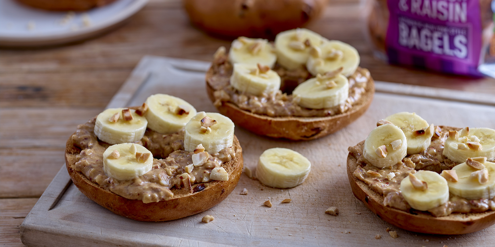

Peanut Butter and Banana Bagel

Why it's so good!
This hearty lunch is a fantastic way to get the carbs you'll need for energy throughout the rest of your day. The toasted bagels provide the perfect crunch to the decadent peanut butter and the soft, sweet sliced banana.
Wash it down with a protein shake for the perfect post-gym meal!
Ingredients
- Bagels
- Peanut Butter
- Banana
- (Optional) Protein powder
- (Optional) Milk
Steps
- Carefully slice the bagel with a breadknife and pop them in the toaster. Give it time as this recipe works best with a nice and crunchy bagel as opposed to a really chewy one.
- Spread the peanut butter on top. Use about 20g of peanut butter for each side. More is better in this scenario, and don't worry if you make a mess!
- Slice the banana into about ten segments and place neatly around each side of the bagel.
- (Optional) Whip up a quick protein shake - two flavours that go really well with the bagel are vanilla and salted caramel.